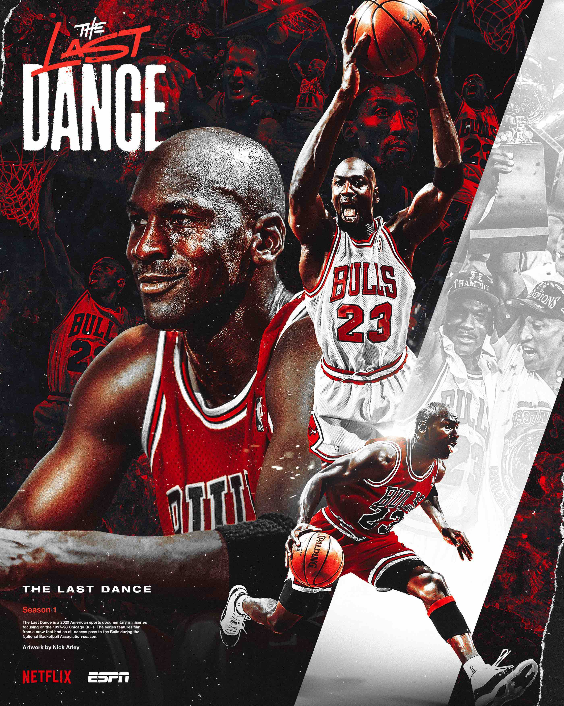

Grandes acontecimentos da Segunda Guerra Mundial, A cores
Grandes Momentos da Segunda Guerra em Cores, que explora diversos momentos de uma das épocas mais sangrentas da humanidade, com o apoio de historiadores e gravações restauradas e coloridas de confrontos históricos como Dia D e o ataque japonês a Pearl Harbor.
A série busca explicar os acontecimentos do confronto, que durou de 1939 a 1945 e buscava impedir o avanço dos regimes nazista e fascista na Europa. Com as filmagens coloridas, é possível ver maiores detalhes nas imagens resgatadas de arquivos tanto dos exércitos do Eixo, quanto dos Aliados.
Filme 2
O mundo dos esportes é recheado de grandes atletas que constantemente ganham fama dentro e fora das competições. De Pelé a Muhammad Ali, não faltam exemplos de grandes atletas que entraram para a história como grandes vencedores, cujo legado se tornou quase inestimável. Com carreiras cuja duração no máximo ultrapassam uma década, essas lendas se mantém vivas mesmo após a aposentadoria através de registros que relembram seus grandes feitos. Dentre o panteão de maiores de todos os tempos, é impossível ignorar Michael Jordan, que fez história com uma das mais brilhantes carreiras da história do basquete. Resultado de uma parceria entre ESPN e Netflix, Arremesso Final é o registro definitivo não apenas da trajetória do astro ao lado dos Chicago Bulls, mas de um importante período da história desse esporte, que alcançou o patamar de fenômeno cultural Em seus 10 episódios, Arremesso Final acompanha o último campeonato da equipe dos Bulls que entrou para a história como uma das maiores de todos os tempos sob a liderança de Michael Jordan. A produção começou durante a temporada 1997-98 da NBA, quando uma equipe de filmagem ganhou livre acesso aos bastidores do time, registrando coletivas de imprensa, vestiários e todo o seu cotidiano. O resultado de mais de um ano de gravações ficou guardado em um cofre por quase duas décadas, até que produtores da NBA entraram em contato com o próprio Jordan, dono dos direitos, com um projeto que partia de duas grandes inspirações. A primeira era o sucesso de documentários como O.J.: Made in America e Making a Murderer, já a segunda era a urgência em apresentar a jornada de Jordan a uma nova geração que usava seus tênis e compartilhava seus memes, mas apenas o conheciam por sua fama.